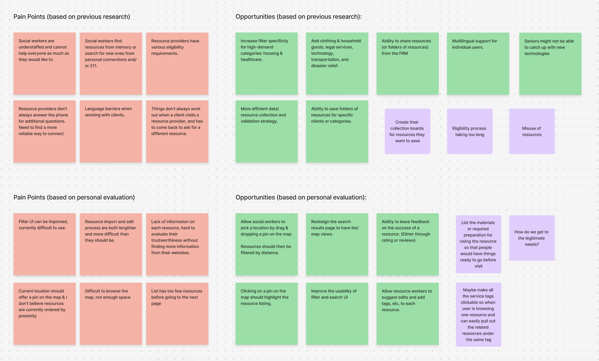
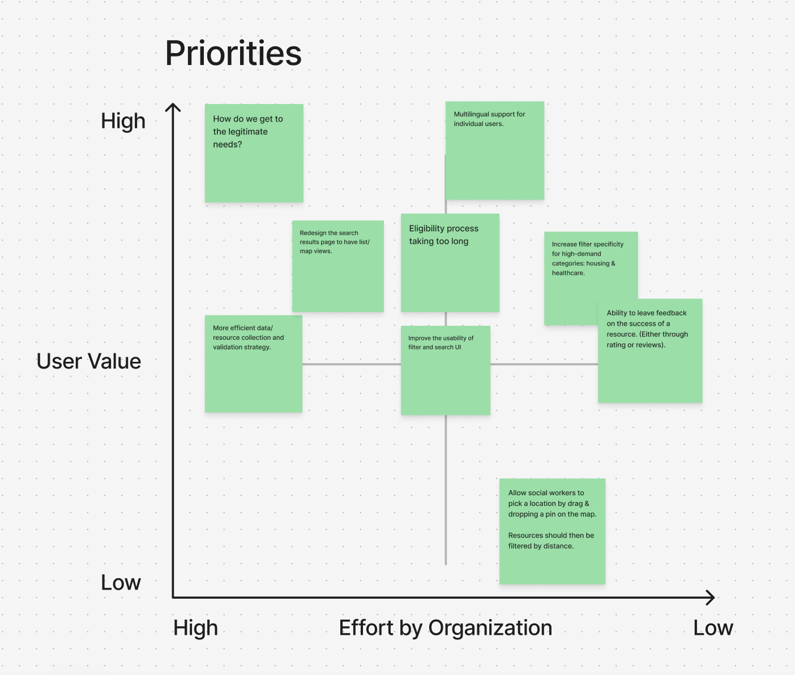
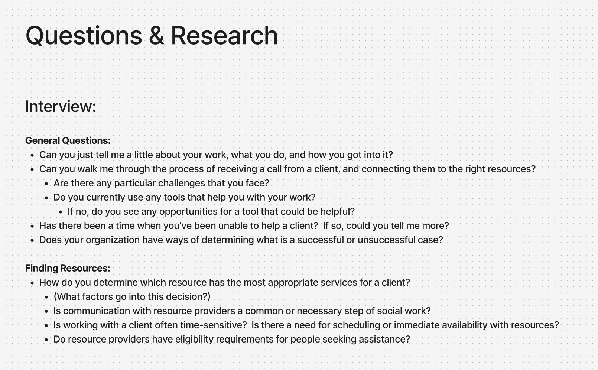
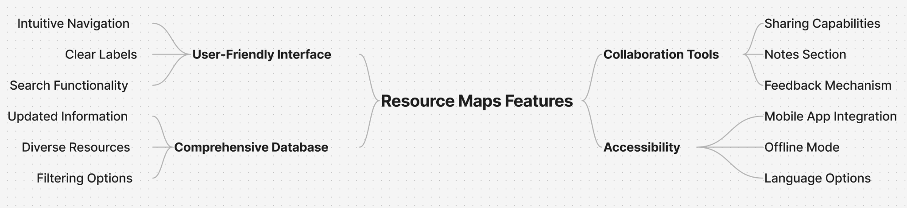

Unique circumstances
ALICE households, people with disabilities, domestic-violence survivors, veterans, older adults, LGBTQIA+ people, and many others.
Designing a clearer resource-finding experience for social workers supporting clients and people accessing the Florida Resource Map directly for help.

The project research described a difficult path to social services: different eligibility requirements, inconsistent terminology, and complex applications. Both social workers making referrals and people seeking help directly need to understand which resources fit their circumstances.
The design opportunity was to make service information easier to find and evaluate before contacting a provider. A directory can clarify available information and next steps, but it cannot change a provider’s eligibility rules or application process.
“Every service we’ve ever tried to use required enormous amounts of paperwork that had to be filled out perfectly to see if you were ‘needy enough’… They deliberately make it as dehumanizing and demoralizing as possible.”— Social worker
ALICE households, people with disabilities, domestic-violence survivors, veterans, older adults, LGBTQIA+ people, and many others.
The research mapped a journey across call centers, printed directions, and online directories, with referrals sometimes relying on familiar programs and personal connections.
The research highlighted inconsistent terminology and the challenge of keeping detailed program information current across providers.
Research takeaway: matching a person to a service depends on both their circumstances and the quality of the available information. A directory needs useful filters as well as a practical way to maintain its listings.
The project research and landscape analysis pointed to these themes. They informed design decisions; they are not measured outcomes of the redesign.
Different criteria, terminology, and application steps make it difficult to judge whether a service is suitable.
Design implication: show service categories, eligibility tags, and next steps before a person contacts a provider.
People navigate several channels, while social workers may rely on programs they already know.
Design implication: provide searchable results, relevant filters, and list/map views to help explore available options.
The research identified barriers to keeping comprehensive program information up to date.
Design implication: include editing workflows and visible update information. Reviews can add context, but do not establish accuracy or eligibility.


The goal was a centralized, comprehensive directory that connected people to support without repeating the mistakes of earlier attempts.
Surface eligibility requirements and application steps early, so people can review what a program requires before deciding to contact it.
Consider reading, language, and navigation needs through clear labels, text-size controls, and alternatives to map-only browsing. Implementation still requires accessibility evaluation.
Include resource-editing workflows and update information in the design, while recognizing that ongoing accuracy also depends on provider participation and content maintenance.
People using the Florida Resource Map directly to find support for themselves or someone they care for.
A clear search entry point, service and eligibility information, language information, and visible next steps.
Social workers using the directory to identify suitable resources and help clients navigate available services.
Detailed filters, scannable result cards, saved collections, and sharing actions.
Resource providers and directory maintainers support information quality through editing workflows; they are distinct from the two primary resource-finding audiences.
We annotated user flows over low-fidelity designs to identify pain points before moving into high fidelity. The early work focused on information architecture, navigation, search, resource details, reviews, and saved resources.




The priority map places user value on the vertical axis and organizational effort on the horizontal axis, with higher effort on the left. More specific filters and multilingual support appear toward the higher-value, lower-effort side; understanding needs and maintaining data require greater organizational effort. Custom map-pin placement sits lower in user value.
The design emphasizes filter usability, service and eligibility information, and list/map browsing. These address the immediate challenge of identifying a relevant program.
Collections and sharing support follow-up. Editing and feedback provide ways to contribute information, alongside the ongoing work of maintaining the directory.
Language support appears prominently in prioritization. Offline access and mobile app integration also appear in ideation; the material shown does not establish them as delivered features.


I worked with the development team and built on designs from previous student teams. The examples below connect the resource-finding problems to the interface and supporting workflows. They show design changes, not measured improvements in speed, satisfaction, or traffic.
Explore the Figma prototype ↗| User task | Design response | Research connection |
|---|---|---|
| Find a suitable resource | Location/keyword search, service and personal filters, list/map results | Different circumstances require more than a familiar program name. |
| Understand the next step | Eligibility information, service details, contact information, and application steps | Inconsistent requirements and complex applications create uncertainty. |
| Save and follow up | Save/share actions and saved-resource collections | Social workers need to pass information on; direct users may need to return to it. |
| Support information upkeep | Editing fields, update information, and feedback options | Resource information needs continued maintenance beyond the search interface. |
For people entering the directory directly, the design offers location and keyword search, a browse-all option, and labeled service categories. Visible text-size and language controls acknowledge different access needs. These are design choices intended to clarify the starting point.

To address varied eligibility and fragmented referrals, result cards expose services, eligibility tags, location context, and update information. Program and personal filters support narrowing the list, while Save and Share actions support social workers’ follow-up and direct users’ return visits.


The detail design groups services, restrictions, next steps, languages, contact details, and opening hours. This responds to the difficulty of understanding requirements before applying. Reviews and update indicators offer additional context; they do not guarantee that a program is suitable or its information current.


The supporting dashboard and editing wireframes organize resource details, eligibility tags, language fields, and saved lists. These address the maintenance and follow-up needs identified in research. The interface provides a place to edit information; ongoing accuracy still requires a maintenance process.


A shared foundation for typography, iconography, color, and controls helped the design team and 13 developers work from the same visual language.


People may arrive with different reading, language, vision, motor, or digital-confidence needs. The design includes several responses, while implementation-level accessibility remains to be evaluated.
Text-size controls, labeled category icons, and structured detail sections aim to support reading and navigation. A text-based results list accompanies the map.
The interface includes a language entry point, language filters, and languages-spoken information. These are distinct from confirming that the whole service has been translated and tested.
Keyboard access, focus order, screen-reader labels, contrast, zoom/reflow, and control sizes need checking in the working product. No completed accessibility audit or compliance result is claimed here.
The two primary audiences share a need for suitable resources, but approach the directory differently. Direct users need a clear entry point and next steps; social workers also need comparison, saving, and sharing for client follow-up.
The case study is grounded in the research findings, prioritization, wireframes, and design iterations shown here. I do not have outcome measurements for search time, satisfaction, or traffic, so I cannot attribute improvements in those areas to the redesign.
A next evaluation should include both social workers and people seeking resources directly. Tasks should cover finding an eligible service, explaining how to contact or apply, and saving or sharing it. Accessibility checks and a sustainable content-maintenance process are also needed.